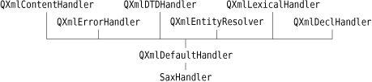

|
|
SAX is a public domain de facto standard API for reading XML documents. Qt's SAX classes are modeled after the SAX2 Java implementation, with some differences in naming to match the Qt conventions. Compared with DOM, SAX is more low-level and usually faster. But since the QXmlStreamReader class presented earlier in this chapter offers a more Qt-like API and is faster than the SAX parser, the main use of the SAX parser is for porting code that uses the SAX API into Qt. For more information about SAX, see http://www.saxproject.org/.
Qt provides a SAX-based non-validating XML parser called QXmlSimpleReader. This parser recognizes well-formed XML and supports XML namespaces. When the parser goes through the document, it calls virtual functions in registered handler classes to indicate parsing events. (These "parsing events" are unrelated to Qt events, such as key and mouse events.) For example, let's assume the parser is analyzing the following XML document:
<doc>
<quote>Gnothi seauton</quote>
</doc>
The parser would call the following parsing event handlers:
startDocument()
startElement("doc")
startElement("quote")
characters("Gnothi seauton")
endElement("quote")
endElement("doc")
endDocument()
The preceding functions are all declared in QXmlContentHandler. For simplicity, we omitted some of the arguments to startElement() and endElement().
QXmlContentHandler is just one of many handler classes that can be used in conjunction with QXmlSimpleReader. The others are QXmlEntityResolver, QXmlDTDHandler, QXmlErrorHandler, QXmlDeclHandler, and QXmlLexicalHandler. These classes only declare pure virtual functions and give information about different kinds of parsing events. For most applications, QXmlContentHandler and QXmlErrorHandler are the only two that are needed. The class hierarchy we have used is shown in Figure 16.4.

For convenience, Qt also provides QXmlDefaultHandler, a class that is derived from all the handler classes and that provides trivial implementations for all the functions. This design, with many abstract handler classes and one trivial subclass, is unusual for Qt; it was adopted to closely follow the model Java implementation.
The most significant difference between using the SAX API and QXmlStreamReader or the DOM API is that the SAX API requires us to manually keep track of the parser's state using member variables, something that is not necessary in the other two approaches, which both allowed recursive descent.
To illustrate how to use SAX for reading XML files, we will write a parser for the book index file format described earlier in this chapter (p. 389). Here we will parse using a QXmlSimpleReader and a QXmlDefaultHandler subclass called SaxHandler.
The first step to implement the parser is to subclass QXmlDefaultHandler:
class SaxHandler : public QXmlDefaultHandler
{
public:
SaxHandler(QTreeWidget *tree);
bool readFile(const QString &fileName);
protected:
bool startElement(const QString &namespaceURI,
const QString &localName,
const QString &qName,
const QXmlAttributes &attributes);
bool endElement(const QString &namespaceURI,
const QString &localName,
const QString &qName);
bool characters(const QString &str);
bool fatalError(const QXmlParseException &exception);
private:
QTreeWidget *treeWidget;
QTreeWidgetItem *currentItem;
QString currentText;
};
The SaxHandler class is derived from QXmlDefaultHandler and reimplements four functions: startElement(), endElement(), characters(), and fatalError(). The first three functions are declared in QXmlContentHandler; the last function is declared in QXmlErrorHandler.
SaxHandler::SaxHandler(QTreeWidget *tree)
{
treeWidget = tree;
}
The SaxHandler constructor accepts the QTreeWidget we want to populate with the information stored in the XML file.
bool SaxHandler::readFile(const QString &fileName)
{
currentItem = 0;
QFile file(fileName);
QXmlInputSource inputSource(&file);
QXmlSimpleReader reader;
reader.setContentHandler(this);
reader.setErrorHandler(this);
return reader.parse(inputSource);
}
This function is called when we have the name of a file to be parsed. We create a QFile object for the file and create a QXmlInputSource to read the file's contents. Then we create a QXmlSimpleReader to parse the file. We set the reader's content and error handlers to this class (SaxHandler), and then we call parse() on the reader to perform the parsing. In SaxHandler, we only reimplement functions from the QXmlContentHandler and QXmlErrorHandler classes; if we had implemented functions from other handler classes, we would also have needed to call the corresponding setXxxHandler() functions.
Instead of passing a simple QFile object to the parse() function, we pass a QXmlInputSource. This class opens the file it is given, reads it (taking into account any character encoding specified in the <?xml?> declaration), and provides an interface through which the parser reads the file.
bool SaxHandler::startElement(const QString & /* namespaceURI */,
const QString & /* localName */,
const QString &qName,
const QXmlAttributes &attributes)
{
if (qName == "entry") {
currentItem = new QTreeWidgetItem(currentItem ?
currentItem : treeWidget->invisibleRootItem());
currentItem->setText(0, attributes.value("term"));
} else if (qName == "page") {
currentText.clear();
}
return true;
}
The startElement() function is called when the reader encounters a new opening tag. The third parameter is the tag's name (or more precisely, its "qualified name"). The fourth parameter is the list of attributes. In this example, we ignore the first and second parameters. They are useful for XML files that use XML's namespace mechanism, a subject that is discussed in detail in the reference documentation.
If the tag is <entry>, we create a new QTreeWidgetItem. If the tag is nested within another <entry> tag, the new tag defines a sub-entry in the index, and the new QTreeWidgetItem is created as a child of the QTreeWidgetItem that represents the encompassing entry. Otherwise, we create the QTreeWidgetItem as a top-level item, using the tree widget's invisible root item as its parent. We call setText() to set the text shown in column 0 to the value of the <entry> tag's term attribute.
If the tag is <page>, we set the currentText variable to be an empty string. The variable serves as an accumulator for the text located between the <page> and </page> tags.
At the end, we return true to tell SAX to continue parsing the file. If we wanted to report unknown tags as errors, we would return false in those cases. We would then also reimplement errorString() from QXmlDefaultHandler to return an appropriate error message.
bool SaxHandler::characters(const QString &str)
{
currentText += str;
return true;
}
The characters() function is called to report character data in the XML document. We simply append the characters to the currentText variable.
bool SaxHandler::endElement(const QString & /* namespaceURI */,
const QString & /* localName */,
const QString &qName)
{
if (qName == "entry") {
currentItem = currentItem->parent();
} else if (qName == "page") {
if (currentItem) {
QString allPages = currentItem->text(1);
if (!allPages.isEmpty())
allPages += ", ";
allPages += currentText;
currentItem->setText(1, allPages);
}
}
return true;
}
The endElement() function is called when the reader encounters a closing tag. Just as with startElement(), the third parameter is the name of the tag.
If the tag is </entry>, we update the currentItem private variable to point to the current QTreeWidgetItem's parent. (For historical reasons, top-level items return 0 as their parent rather than the invisible root item.) This ensures that the currentItem variable is restored to the value it held before the corresponding <entry> tag was read.
If the tag is </page>, we add the specified page number or page range to the comma-separated list in the current item's text in column 1.
bool SaxHandler::fatalError(const QXmlParseException &exception)
{
std::cerr << "Parse error at line " << exception.lineNumber()
<< ", " << "column " << exception.columnNumber() << ": "
<< qPrintable(exception.message()) << std::endl;
return false;
}
The fatalError() function is called when the reader fails to parse the XML file. If this occurs, we simply print a message to the console, giving the line number, the column number, and the parser's error text.
This completes the implementation of SaxHandler. The main() function that uses it is almost identical to the one we reviewed in the previous section for DomParser, the difference being that we use a SaxHandler rather than a DomParser.
|
|
| Converted from CHM to HTML with chm2web Pro 2.85 (unicode) |